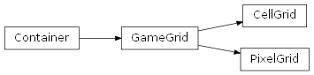

Erste Schritte¶
GameGridP besteht aus zwei Arten von Klassen:
- Das Grid umfasst den Hintergrund auf dem die Akteure agieren. Es gibt zwei Arten von Grids. Es gibt zwei Arten von Grids, je nachdem ob du pixelgenaue Spiele erstellen möchtest, oder ob die Spiele ähnlich wie ein Brettspiel auf einem Raster spielen sollen.
- Die Klasse Actor bezeichnet alle Arten von Objekten, die innerhalb der Spielwelt leben.
Die Spielwelt¶
Die Spielwelt ist entweder ein CellGrid für Spiele, die auf einzelnen Zellen basieren oder ein PixelGrid für Pixelgenaue Spiele.
Um eine neue Spielwelt zu erstellen, musst du zunächst eine Kindklasse von CellGrid oder von PixelGrid erstellen.
Dies geht folgendermaßen:
1 2 3 4 | class MyGrid(CellGrid):
def __init__(self):
super().__init__(cell_size=42, columns=20, rows=8, margin=1)
self.add_image(img_path="images/soccer_green.jpg")
|